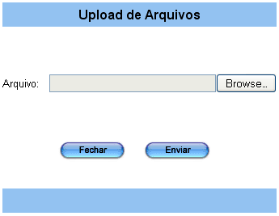

Fazer Recebimento [
Voltar
]
Esta tela permite o
usuário realizar recebimentos, consultar recebimentos
anteriores, anexar documentos, registrar ocorrências, etc.
Para acessar
a tela, vá ao menu "Recebimento - Recebimento" e clique em "Fazer Recebimento".
Ao clicar no nome do
formulário, o sistema abrirá a seguinte tela:
1º
Passo: informe os dados do recebimento em questão (Aba
Geral). Lembre-se
que campos amarelos são obrigatórios.
- No.
Recebimento. Este
campo apresenta por padrão um sinal de "+". Desta forma, assim que
o recebimento é salvo, é-lhe atribuído o próximo número de recebimento
disponível.
- Fornecedor. Informe
aqui o código do fornecedor do qual se
está efetuando o recebimento. Clique no botão
 [Pesquisar] para selecioná-lo por
meio de uma listagem contendo todos os fornecedores cadastrados. [Pesquisar] para selecioná-lo por
meio de uma listagem contendo todos os fornecedores cadastrados.
- Programa. Insira
aqui o código do programa caso exista. Clique no botão [Pesquisar] para selecioná-lo por
meio de uma listagem contendo todos os programas cadastrados.
- Condição de Entrega.
Selecione aqui entre: "CIF"
e "FOB".
- Data de Chegada.
Adicione aqui a data de chegada. Clique no botão
 [Data] para selecioná-lo por meio de
um calendário. [Data] para selecioná-lo por meio de
um calendário.
- Mat. Recebedor.
Insira aqui a matrícula do recebedor.
|
Campos de data possuem alguns
atalhos importantes, são eles:
Data
atual: digite o sinal . (ponto) e
pressione a tecla "Enter" para que o sistema retorne a data atual;
Data
do mês corrente: digite o dia do mês e
pressione a tecla "Enter" para que o sistema retorne o mês e ano
correntes;
Dias
a contar da data atual: digite o sinal + (mais) ou - (menos)
antes do número de dias em referência à data atual e pressione
a
tecla "Enter" para a data anterior ou posterior à data atual. |
2° Passo: informe
os dados da nota fiscal (Aba N. Fiscal).
- Nº.
Nota Fiscal. Insira aqui o número da nota fiscal.
- Data de
Emissão NF. Informe aqui a data de emissão da
nota fiscal.
- Total
da Nota Fiscal. Informe aqui o valor da nota fiscal.
3° Passo: clique no
botão  [Salvar] para salvar o
recebimento. Volte para a aba Geral e preencha os novos
campos liberados. [Salvar] para salvar o
recebimento. Volte para a aba Geral e preencha os novos
campos liberados.
- AFM.
Informe aqui o número da Autorização de Fornecimento de
Material. Clique no botão [Pesquisar] para selecioná-lo por
meio de uma listagem contendo todos os programas cadastrados. Logo após
clique no botão
 . .
Quando este campo é preenchido os campos Número do Empenho, Modalidade de Empenho,
PAM e Natureza da Entrada
também serão preenchidos, assim como a grade de produtos.
4° Passo: na
grade de produtos informe a Quantidade a Receber de cada produto. Clique no botão [Salvar] para armazenar as
informações. Em seguida clique na aba "N. Fiscal".
5º Passo: na aba "N. Fiscal" entre com o valor Total da Nota Fiscal. Clique no botão [Salvar] para armazenar as
informações.
6º Passo: confirme o Pré-Recebimento. Clique no botão [Pré-Recebimento]
para confirmar o recebimento. Em seguida você será redirecionado para a
aba "Inspeção", conforme imagem abaixo.
Observação: após
a confirmação do pré-recebimento, será possível desfazê-lo por meio do botão [Desfazer Pré-Recebimento].
Este
procedimento poderá ser realizado a qualquer momento desde que o
recebimento não tenha sido processado.
7º Passo: insira
os dados da conferência
física. Informe
nos campos da grade, os dados referentes ao Lote, Data de Validade, Endereço
de Armazenagem,
Data
Fabricação,
Fabricante, Programa e Temperatura Conferida,
se aplicáveis.
Observação:
para produtos com temperatura
recomendada (no Cadastro de Produtos) igual a Resfriado ou Congelado,
não serão aceitos recebimentos em temperatura divergente. Neste caso,
para prosseguir com o recebimento, o seguinte deverá ser realizado:
- Desconfirme
o registro por meio do botão [Desfazer Pré-Recebimento];
- Em
seguida, selecione a linha do produto com temperatura divergente e
clique no botão
 [Excluir]
da grade (ver imagem abaixo) para excluí-lo do recebimento; [Excluir]
da grade (ver imagem abaixo) para excluí-lo do recebimento;
- Na aba
"Nota Fiscal", ajuste o valor do campo "Total NF" para que
reflita o valor do campo "Total
do Recebimento";
- Clique
no botão [Salvar] para salvar o registro;
- Por
fim, clique no botão [Pré-Recebimento] e prossiga com as instruções do
passo 7.
Importante:
deverá ser aberta uma ocorrência para este fornecedor relatando a
entrega do produto fora da temperatura de armazenagem padrão.
Para finalizar clique no botão [Salvar] para armazenar as informações.
8°
Passo: clique no
botão [Nota de Pré-Recebimento] para gerar o relatório "Nota de Pré-Recebimento".
9º
Passo: após imprimir o relatório e se todos dados estiverem corretos, clique no botão  [Processar] que estará disponível para concluir o recebimento. [Processar] que estará disponível para concluir o recebimento.
Observação:
caso o botão de processar esteja indisponível, posicione o
cursor
do mouse sobre o botão para saber a causa da indisponibilidade. Quando
indisponíveis, os botões apresentam uma mensagem de erro quando o mouse
é posicionado sobre o botão.
10°
Passo (Opcional): clique no botão  [Ocorrências] para registrar ocorrências de
recebimento. [Ocorrências] para registrar ocorrências de
recebimento. Uma
vez processado o recebimento, a qualquer momento é possível
registrar uma ocorrência a ele relacionada.
A seguinte tela será exibida:
Na parte inferior da tela são exibidas as ocorrências já registradas
para o fornecedor.
- Preencha
os detalhes desta ocorrência. Todos os campos são
obrigatórios.
- Ocorrência. Este
campo apresenta por padrão um sinal de "+". Desta forma, assim que
o registro é salvo, é-lhe atribuído o próximo número de ocorrência
disponível para este fornecedor;
- Motivo. Selecione
um motivo para esta ocorrência. Para motivos não descritos
entre as opções selecione Outros:
- Dados
do faturamento (CNPJ, endereço, data de emissão da NF);
- Produto(s)
divergente(s) da ordem de compra;
- Quantidade(s)
divergente(s) - nota fiscal x ordem compra;
- Condições
inadequadas de pagamento;
- Divergência
de valores na nota fiscal;
- Condições
inadequadas de embalagem;
- Quantidade(s)
divergente(s) - nota fiscal x físico;
- Divergência(s)
de lote e/ou validade - nota fiscal x físico;
- Prazo
de validade inadequado;
- Lote
entregue inadequado;
- Marca/Apresentação
inadequada do produto;
- Desvio
de temperatura dos produtos entregues;
- Atraso
na entrega;
- Desvio
de qualidade;
- Outros.
- Outros.
Se a opção Outros
tiver sido selecionada no campo "Motivo", informe
neste campo o motivo em questão;
- Data.
Especifique aqui a data em que esta ocorrência foi
constatada. Clique no botão
 [Data] para selecionar a data a
partir de um calendário. [Data] para selecionar a data a
partir de um calendário.
- Responsável.
Este campo é preenchido com o nome do usuário que está logado no
Sistema. Se desejar, clique no botão
 [Pesquisar] para selecionar outro usuário cadastrado; [Pesquisar] para selecionar outro usuário cadastrado; - Classificação. "Grave", "Moderada" e "Leve";
- Observações.
Deposite aqui informações adicionais sobre a ocorrência;
- AFM. Indique aqui o número da AFM relacionada ao recebimento; Clique no botão [Pesquisar] para selecioná-la por meio de uma listagem contendo todas as AFM cadastradas;
- N°.
Recebimento. Ao
abrir a tela de ocorrências a partir de um recebimento, este
campo
será populado com o número do recebimento em questão;
- Linha
de Referência. Clique no botão [Pesquisar] para selecionar a linha do produto que motivou esta
ocorrência;
- Nota
Fiscal. Ao selecionar um recebimento, o Sistema carregará
aqui a nota fiscal do recebimento em questão;
- Data
de Emissão. Ao selecionar um recebimento, o
Sistema carregará aqui a data de emissão da nota fiscal do recebimento
em questão;
- Produto. Ao selecionar uma linha de
referência de recebimento, o Sistema carregará aqui a descrição do
produto em questão;
- Registro
MS/Anvisa. Você pode inserir aqui o registro para o
produto no Ministério de Saúde e Anvisa;
- Lote. Ao selecionar uma linha de
referência de recebimento, o Sistema carregará aqui o lote do produto
em questão;
- Validade. Ao selecionar uma linha de
referência de recebimento, o Sistema carregará aqui a validade do
produto em questão;
- Marca. Ao selecionar uma linha de
referência de recebimento, o Sistema carregará aqui a marca do produto
em questão;
- Quant.
Recebida. Ao
selecionar uma linha de referência de recebimento, o Sistema carregará
aqui a quantidade recebida do produto em questão;
- Quant.
Segregada. Informe aqui a quantidade segregada deste
produto;
- Descrição
Detalhada. Insira aqui uma descrição detalhada da
ocorrência;
- Notivisa. Especifique
Informe aqui o número da notificação da ocorrência junto à ANVISA,
através do Sistema Nacional de Notificações para a Vigilância Sanitária
- NOTIVISA. Para acessar o site do Sistema de Notificações para a
Vigilância Sanitária, clique no link ao lado do campo (ver imagem
abaixo):

- Parecer
do Fornecedor. Você pode depositar aqui o parecer do
fornecedor sobre a ocorrência;
- Ação Realizada. Você pode depositar aqui as ações tomadas
referentes a esta ocorrência;
- Recorrências.
Informe aqui se há recorrências associadas.
- Clique
no
botão [Salvar] para salvar a
ocorrência. Para cadastrar outra ocorrência, clique no
botão
 [Novo]
e repita os passos acima. [Novo]
e repita os passos acima.
Observação:
caso a ocorrência em questão seja um desvio de qualidade, você pode
imprimir o relatório "Comunicado
de Desvio de Qualidade" por meio do botão  [Comunicado de Desvio de Qualidade]. [Comunicado de Desvio de Qualidade].
Para retornar à tela principal do recebimento, clique no botão  . .
12° Passo: clique
no botão  [Documentos e imagens do Material] para anexar
documentos e imagens ao recebimento. Notas
fiscais digitalizadas e imagens de produtos avariados podem ser
anexadas ao recebimento por meio da tela "Documentos e Imagens do
Recebimento" [Documentos e imagens do Material] para anexar
documentos e imagens ao recebimento. Notas
fiscais digitalizadas e imagens de produtos avariados podem ser
anexadas ao recebimento por meio da tela "Documentos e Imagens do
Recebimento".
Na parte inferior da tela são exibidos os
documentos já anexados ao recebimento.
- Informe na tela os detalhes do
documento. Informe
o tipo de documento, adicione uma descrição para o documento ou imagem,
selecione o arquivo que deseja carregar (upload)
e, se necessário, especifique um link adicional da internet ou
intranet (www.linkexterno.com/arquivo.pdf, por exemplo). Para
especificar o caminho do arquivo, veja abaixo:
Clique no
botão 
[Upload de arquivos] para visualizar a tela de upload;

- Clique no botão
 [Browse] para
selecionar o arquivo que deseja carregar; e [Browse] para
selecionar o arquivo que deseja carregar; e
- Após selecionar o arquivo desejado, clique no
botão
 [Enviar] para
realizar o upload. [Enviar] para
realizar o upload.
- Clique
no
botão [Salvar] para
concluir a associação do arquivo ao recebimento. Se
desejar anexar outros documentos e imagens a este recebimento, clique
no botão [Novo]
e repita os passos acima.
Para retornar à tela principal do recebimento, clique no botão .
|